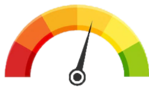

DEVELOPPEUR WEB ET WEB MOBILE
Emmanuel ASPIROT

HTML
CSS

Javascript
Après vingt ans passés dans la restauration, j'ai entamé une formation de développeur web et web mobile pour une reconversion professionnelle. Depuis toujours attiré par l'informatique, l'intégration de votre entreprise me permettrait de me rapprocher de mes premières passions et projets.
FORMATIONS
Actuellement en formation Développeur web et web mobile à l'AFPA
2006-2007
1ère Année de DNAP (Diplôme national d'arts plastiques) à l'ESAC (Ecole supérieure d'art et de communication) de Pau
2006
Baccalauréat Professionnel EDPI (Etude et Définition de produits industriels) au lycée Professionnel Saint-Joseph d'Hasparren
COMPETENCES
LOGICIELS MAITRISÉS
- Visual Studio Code
- Algobox
- Dreamweaver
- Adobe Première Pro
- Catia v5
- SolidWorks
LANGUAGES INFORMATIQUE:
- HTML
- CSS
- JAVASCRIPT
LANGUES
-
Français
Maternelle Anglais
IntermediaireEspagnol
Intermediaire
INTÉRÊTS PERSONNELS
- Web
- Jeux vidéos
- Cinéma
- Art
- Musique
EXPERIENCES PROFESSIONNELLES
| Juillet 2016 à Novembre 2020 (Anglet/ Bayonne) |
|
|---|---|
| Fêtes de Bayonne 2016 (Bayonne) |
|
| Septembre 2011 à Octobre 2014 (Bayonne) |
|
| Fêtes de Bayonne 2011 (Bayonne) |
|
| Décembre 2008 à Juillet 2010 (Biarritz/Bayonne) |
|